청소년상담사-1급(1교시)(구) (2014-03-29 기출문제)
1과목: 상담사 교육 및 사례지도
1. 수련상담자의 내담자 안녕을 책임지는 수퍼바이저의 행동으로 옳지 않은 것은?
- 수련상담자의 전문성 수준에 맞는 내담자를 선택하게 한다.
- 내담자에게 수퍼바이저 자신에 대한 정보를 제공하도록 한다.
- 수련상담자가 가능하면 다양하고 많은 내담자를 만나도록 한다.
- 내담자가 최선의 상담을 받고 있지 않다면 다른 상담자에게 의뢰할 수 있다.
- 내담자에게 수련상담자로서의 신분과 수퍼비전을 받고 있다는 것을 알리도록 한다.
(정답률: 알수없음)

2. 수련상담자 평가에 관한 내용이다. ( )안에 들어가야 할 것들을 순서대로 제시한 것은?
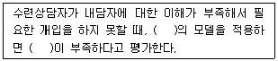
- 버나드(Bernard)-개입 기술
- 버나드(Bernard)-개념화 기술
- 버나드(Bernard)-개인화 기술
- 홀로웨이(Holloway)-개인화 기술
- 홀로웨이(Holloway)-개입 기술
(정답률: 알수없음)
3. 스톨튼버그(Stoltenberg)의 상담자 통합 발달 모형에 관한 설명으로 옳은 것은?
- 상담자 발달을 인생 전체에 걸쳐 개념화하였다.
- 상담자를 면접한 자료에 근거한 경험적 모델이다.
- 초기 이론에서는 8단계로 구분하여 발달을 설명하였다.
- 상담과정 기술 등 8가지 상담활동 차원으로 발달을 기술하였다.
- 수퍼비전이 상담자 발달을 촉진시키는 구체적인 과정을 간과하였다.
(정답률: 알수없음)
4. 내담자의 순환적인 부적응 패턴(cyclical maladaptive pattern)에 관한 내용이 아닌 것은?
- 전생애 발달모델과 통합이론에서 발달되었다.
- 어떤 내담자에게도 적용해볼 수 있는 이해의 틀이다.
- 융통성이 없고 순환적인 문제들이 다양하게 드러난다.
- 주변 사람들과의 관계에 대한 내담자의 지각, 생각, 감정, 욕망, 행동 등이 포함된다.
- 주의 깊게 경청해야 하고 내담자에 대한 상담자 자신의 반응에 주의를 기울여야 한다.
(정답률: 알수없음)
5. 상담의 윤리 중 비해악성(nonmaleficence)에 관한 내용들을 모두 고른 것은?
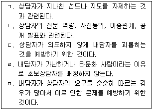
- ㄱ, ㄴ, ㄷ
- ㄱ, ㄴ, ㄹ
- ㄱ, ㄹ, ㅁ
- ㄴ, ㄷ, ㅁ
- ㄷ, ㄹ, ㅁ
(정답률: 알수없음)
6. 초보상담자가 윤리의무를 정확하게 이해하지 못해 겪는 어려움이다. ( )안에 들어갈 내용을 순서대로 제시한 것은?
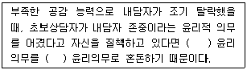
- 전문적-기초
- 기초-전문적
- 소망적-법적
- 법적-소망적
- 관계-전문적
(정답률: 알수없음)
7. 상담자 김선생님은 최근 태풍으로 자신의 집이 파괴되어 피해 당사자가 되었다. 그럼에도 불구하고 지역 피해자들을 위하여 상담서비스를 제공해야 하는 상황이다. 김선생님에게 취할 수퍼바이저 행동으로 옳지 않은 것은?
- 관심을 가지고 가까이에서 일상 생활을 살핀다.
- 필요하면 CISD(critical incidence stress debriefing)에 참여하도록 의뢰한다.
- CISD 운영시 보조지도자(co-leader)로 참석하도록 한다.
- 적은 수의 사례라도 재난피해자들의 상담을 진행하도록 한다.
- 김선생님에게 피해 사건과 그 후 어떻게 지내고 있는지 등을 이야기 하게 한다.
(정답률: 알수없음)
8. 상담에서 옹호 활동(advocacy)을 모두 고른 것은?
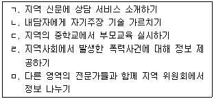
- ㄱ, ㄴ, ㄷ
- ㄱ, ㄴ, ㅁ
- ㄱ, ㄷ, ㄹ
- ㄴ, ㄹ, ㅁ
- ㄷ, ㄹ, ㅁ
(정답률: 알수없음)
9. 미국의 타라소프(Tarasoff) 사례에서 논란이 된 상담윤리 문제는?
- 사적 권리 보장
- 비밀 보장 한계
- 이중 관계 문제
- 다문화에 대한 수용
- 사례 기록의 비공개 특권
(정답률: 알수없음)
10. 상담기관에서 근무하는 수퍼바이저의 과실 책임을 최소화하기 위한 행동이 아닌 것은?
- 정기적으로 수퍼비전 하기
- 모든 수퍼비전 활동 기록하기
- 적절한 전문가에게 자문 구하기
- 단일한 방식으로 수퍼비전 하기
- 수퍼바이지가 담당한 모든 내담자 평가하기
(정답률: 알수없음)
11. 행동주의 수퍼비전에 관한 설명으로 옳지 않은 것은?
- 수퍼바이저가 목표를 설정한다.
- 실험적 접근방법으로 수퍼비전한다.
- 수퍼바이지의 행동을 상황적인 것으로 본다.
- 수퍼바이지의 구체적 행동에 관심을 갖는다.
- 내담자 문제 해결이 수퍼비전의 일차적 목표이다.
(정답률: 알수없음)
12. 수퍼비전에서 수퍼바이지 평가(evaluation)에 관한 내용으로 옳지 않은 것은?
- 평가 과정을 미리 자세하게 설명한다.
- 수퍼바이지의 방어적 태도에 대해 함께 논의한다.
- 형성(formative)평가보다 총괄(summative)평가를 우선한다.
- 수퍼바이지 평가에 영향을 미칠 수 있는 모든 인간관계를 주의깊게 관찰한다.
- 상담 수행에 영향을 미치는 수퍼바이지의 배경, 성별 등 개인적 특성을 고려한다.
(정답률: 알수없음)
13. 홀로웨이(Holloway)의 체계적 접근 모델에서 맥락으로서의 수퍼바이저 요인에 속하지 않는 것은?
- 전문가로서의 경험
- 이론적 경향성
- 문화적 요소
- 학습 양식
- 자기 제시
(정답률: 알수없음)
14. 인간중심 수퍼비전에 관한 설명으로 옳지 않은 것은?
- 수퍼비전의 주도권이 수퍼바이지에게 있다.
- 수퍼바이저와 수퍼바이지의 관계에 초점을 맞춘다.
- 수퍼바이저의 역할은 본질적으로 상담자 역할과 같다.
- 수련과정에서 인간중심 상담자로서의 수퍼바이저를 관찰할 수 있도록 한다.
- 수퍼바이지가 상담에 필요한 기술들을 세련되게 사용하는 것을 중요하게 여긴다.
(정답률: 알수없음)
15. 수퍼바이지에게 다음의 질문들을 하는 수퍼바이저의 이론적 접근은?
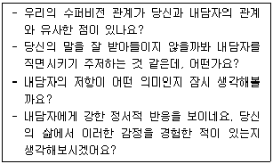
- 경험주의적 접근
- 인지행동적 접근
- 정신분석적 접근
- 인간중심적 접근
- 실존주의적 접근
(정답률: 알수없음)
16. 수퍼비전 관계에 관한 설명으로 옳은 것을 모두 고른 것은?
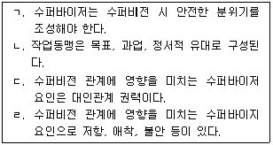
- ㄱ, ㄴ
- ㄱ, ㄹ
- ㄱ, ㄴ, ㄷ
- ㄴ, ㄷ, ㄹ
- ㄱ, ㄴ, ㄷ, ㄹ
(정답률: 알수없음)
17. 집단 수퍼비전의 장점으로 옳지 않은 것은?
- 수퍼바이저에게는 시간적으로, 수퍼바이지에게는 경제적으로 도움이 된다.
- 대리학습의 기회를 제공한다.
- 적절한 자기노출과 피드백을 주고받을 수 있는 기회를 제공한다.
- 유사한 학습 상황에 있는 동료로부터 정서적 지지를 받을 수 있다.
- 비밀보장에 대한 염려가 없다.
(정답률: 알수없음)
18. 상담자 최선생님은 상담 중인 청소년 내담자가 자살계획을 털어놓자 위기상황임을 감지하고 수퍼바이저를 만났다. 수퍼바이저는 상담자에게 경찰에 신고하고 부모에게도 이 사실을 알리도록 하였다. 여기서 수퍼바이저의 개입은 어떤 역할에 해당하는가?
- 교사
- 조언자
- 관리자
- 평가자
- 조정자
(정답률: 알수없음)
19. 수퍼바이저의 문지기(gatekeeper) 역할에 관한 설명으로 옳은 것은?
- 공감, 존중 등의 조력기술을 발달시키는 역할
- 필요한 개입을 통해 내담자의 안녕을 보호하는 역할
- 발달과 성장을 촉진하도록 돕는 역할
- 상담전문가가 되기 위한 자질과 역량을 가지고 있는지 평가하는 역할
- 자기평가를 하는데 필요한 기술, 자원들을 개발하도록 돕는 역할
(정답률: 알수없음)
20. 상담자가 내담자 문제를 파악하지 못하고 있는 경우, 수퍼바이저가 취할 수 있는 교사역할은?
- 수퍼바이저가 파악한 내담자 문제를 알려준다.
- 수련상담자가 내담자와 비슷한 경험이 있는지를 탐색한다.
- 내담자 문제 파악에 도움이 되는 참고서적을 안내하고 읽어 오도록 한다.
- 내담자 문제를 파악하지 못하는 수련상담자의 개인적인 문제를 파악한다.
- 축어록을 검토하면서 수련상담자가 내담자에게 적절하게 반응했는지 검토한다.
(정답률: 알수없음)
21. 다음은 상담자 역량과 관련된 내용이다. ( )안에 알맞은 것은?
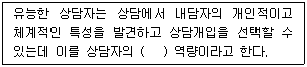
- 상담과정기술
- 개인화
- 대인관계
- 상담 관계 발달
- 사례 개념화
(정답률: 알수없음)
22. 수퍼비전 방식에 관한 설명으로 옳지 않은 것은?
- 직접 관찰 방식은 사전에 내담자의 서면동의가 필요하다.
- 역할극은 다른 수퍼비전 기법과 병행해서 사용할 때 효과적이다.
- 수퍼바이지의 사례 개념화 능력에 한계가 있을 수 있기 때문에 구두보고방식의 수퍼비전은 효과가 작을 수 있다.
- 라이브 수퍼비전은 수퍼바이지가 내담자에 집중할 수 없게 하여 궁극적으로 상담효과를 저해한다.
- 모델링은 수퍼비전 과정 전반에 활용할 수 있다.
(정답률: 알수없음)
23. 평행 과정(parallel process)을 특히 중요하게 다루는 접근은?
- 정신역동적 접근
- 행동적 접근
- 인지행동적 접근
- 구성주의적 접근
- 체제적 접근
(정답률: 알수없음)
24. 수퍼비전에 관한 설명으로 옳은 것을 모두 고른 것은?
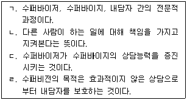
- ㄱ, ㄴ
- ㄴ, ㄷ
- ㄱ, ㄷ, ㄹ
- ㄴ, ㄷ, ㄹ
- ㄱ, ㄴ, ㄷ, ㄹ
(정답률: 알수없음)
25. 수퍼바이저가 알아차려야 하는 수련상담자의 역전이 단서를 모두 고른 것은?
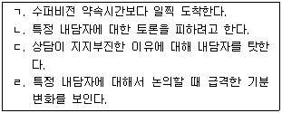
- ㄱ, ㄴ
- ㄱ, ㄷ
- ㄱ, ㄴ, ㄷ
- ㄴ, ㄷ, ㄹ
- ㄱ, ㄴ, ㄷ, ㄹ
(정답률: 알수없음)
26. 수퍼바이저의 개입방식에 관한 설명으로 옳지 않은 것은?
- 촉진적 개입은 모든 발달단계의 상담자에게 필요하다.
- 개념적 개입은 상담이론과 실제에 관한 통합을 도와준다.
- 처방적 개입은 수퍼바이저가 내담자 개념화, 상담 목표와 계획 등을 알려준다.
- 직면적 개입은 불안수준이 높은 초보상담자에게 사용할 때 신중해야 한다.
- 승화적 개입은 상담자의 알아차림(awareness)이 높을 때 사용해야 한다.
(정답률: 알수없음)
27. 수퍼비전에 관한 개입 기술 중 무엇에 관한 설명인가?
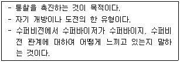
- 즉시성
- 해석
- 직면
- 자기개방
- 공감
(정답률: 알수없음)
28. 수퍼비전에서 수퍼바이지가 경험하는 정서 중 다음에 해당하는 것은?
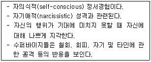
- 죄책감
- 불안
- 수치심
- 당혹감
- 질투
(정답률: 알수없음)
29. 수퍼비전 과정에서 수련상담자의 성적 이끌림에 관한 지표가 확인되었을 때 수퍼비전 단계를 순서대로 옳게 기술한 것은?
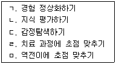
- ㄱ-ㄴ-ㄷ-ㄹ -ㅁ
- ㄱ-ㅁ -ㄹ-ㄴ-ㄷ
- ㄴ-ㄱ-ㄹ -ㅁ -ㄷ
- ㄷ-ㄴ-ㄱ-ㅁ -ㄹ
- ㅁ-ㄹ-ㄴ-ㄱ-ㄷ
(정답률: 알수없음)
30. 초보상담자 수퍼비전 시 수퍼바이저의 역할 중 옳지 않은 것은?
- 가벼운 문제를 가진 내담자를 배정하는 것이 좋다.
- 수퍼비전에 대한 구조화를 해주어야 한다.
- 상담 축어록이나 회기 보고서만 의존하지 말고 수련상담자의 상담활동을 관찰하는 것이 좋다.
- 수퍼바이저에 대한 의존성이 나타나지 않도록 사전에 충분한 교육을 한다.
- 수퍼비전 회기 중에 기본적인 상담개입기술을 모델링한다.
(정답률: 알수없음)
2과목: 청소년 관련 법과 행정
31. 청소년기본법상 대통령령으로 정해야 할 사항을 모두 고른 것은?
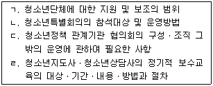
- ㄱ, ㄴ
- ㄴ, ㄷ
- ㄱ, ㄴ, ㄷ
- ㄴ, ㄷ, ㄹ
- ㄱ, ㄴ, ㄷ, ㄹ
(정답률: 알수없음)
32. 청소년기본법의 기본이념을 구현하기 위한 청소년육성정책의 추진방향을 모두 고른 것은?
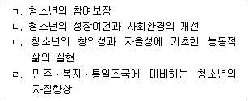
- ㄱ, ㄴ
- ㄱ, ㄷ
- ㄱ, ㄴ, ㄷ
- ㄴ, ㄷ, ㄹ
- ㄱ, ㄴ, ㄷ, ㄹ
(정답률: 알수없음)
33. 청소년복지 지원법상 청소년복지시설의 종류를 모두 고른 것은?
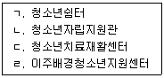
- ㄱ, ㄴ
- ㄱ, ㄷ
- ㄱ, ㄴ, ㄷ
- ㄱ, ㄷ, ㄹ
- ㄱ, ㄴ, ㄷ, ㄹ
(정답률: 알수없음)
34. 청소년기본법상의 내용에 관한 설명으로 옳지 않은 것은?
- 청소년은 9세 이상 24세 이하의 자이다.
- 국가는 청소년특별회의를 필요시 개최할 수 있다.
- 국가는 청소년육성에 관한 기본계획을 5년마다 수립하여야 한다.
- 청소년육성에 관하여 다른 법률에 우선하여 적용한다.
- 국가 및 지방자치단체는 청소년육성에 관한 기본계획에 의하여 연도별 시행계획을 각각 수립ㆍ시행하여야 한다.
(정답률: 알수없음)
35. 청소년기본법상 지방자치단체의 청소년육성관련 업무에 관한 내용으로 옳지 않은 것은?
- 청소년육성전담공무원은 청소년지도사 또는 청소년상담사의 자격을 가진 자로 한다.
- 청소년육성전담공무원의 임용 등에 관하여 필요한 사항은 여성가족부령으로 정한다.
- 시장ㆍ군수ㆍ구청장은 청소년육성을 담당하게 하기 위하여 청소년지도위원을 위촉하여야 한다.
- 특별시ㆍ광역시ㆍ도 및 시ㆍ군ㆍ구에 청소년육성에 관한 업무를 전담하는 기구를 따로 설치할 수 있다.
- 특별시ㆍ광역시ㆍ도, 시ㆍ군ㆍ구 및 읍ㆍ면ㆍ동 또는 청소년육성전담기구에 청소년육성전담공무원을 둘 수 있다.
(정답률: 알수없음)
36. 청소년기본법에 근거를 둔 법을 모두 고른 것은?
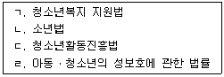
- ㄱ, ㄴ
- ㄱ, ㄷ
- ㄴ, ㄷ
- ㄱ, ㄴ, ㄷ
- ㄱ, ㄴ, ㄷ, ㄹ
(정답률: 알수없음)
37. 청소년 보호법상 인터넷게임의 제공자가 16세 미만의 청소년에게 인터넷게임을 제공할 수 없는 시간대는?
- 오전 0시부터 오전 6시까지
- 오전 0시부터 오전 7시까지
- 오전 0시부터 오전 8시까지
- 오전 1시부터 오전 7시까지
- 오전 1시부터 오전 8시까지
(정답률: 알수없음)
38. 청소년기본법에 규정된 것이 아닌 것은?
- 청소년육성기금
- 청소년의 달
- 청소년시설
- 지방청소년단체협의회
- 지방청소년사무소
(정답률: 알수없음)
39. 다음의 상황에서 특히 강조되어야 할 청소년상담 행정의 원칙은?
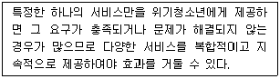
- 체계적 기능 분담의 원칙
- 전문성에 따른 업무 분담의 원칙
- 책임성의 원칙
- 통합 조정의 원칙
- 조사 및 연구의 원칙
(정답률: 알수없음)
40. 두드림ㆍ해밀사업의 지원대상이 아닌 청소년을 모두 고른 것은?
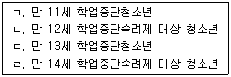
- ㄴ, ㄷ, ㄹ
- ㄱ, ㄷ
- ㄴ, ㄹ
- ㄱ, ㄴ, ㄷ
- ㄱ, ㄴ
(정답률: 알수없음)
41. 청소년동반자(YC) 프로그램에 관한 내용으로 옳은 것은?
- 청소년동반자는 위기청소년을 위하여 지역사회 청소년 협력 자원을 발굴ㆍ연계한다.
- 또래상담자 훈련프로그램의 하나이다.
- 청소년동반자는 일반청소년에 대한 상담ㆍ지원활동을 전개한다.
- 지역사회청소년통합지원체계(CYS-Net) 운영 공무원이 청소년동반자를 관리한다.
- 일회성 상담프로그램이다.
(정답률: 알수없음)
42. 청소년상담복지센터에 관한 설명으로 옳지 않은 것은?
- 시ㆍ도 청소년상담복지센터는 또래상담사업을 실시하고 있다.
- 시ㆍ도 청소년상담복지센터는 시ㆍ도의 청소년상담 및 긴급구조 등의 중심역할을 한다.
- 청소년복지 지원법 시행령에 따르면 시ㆍ도 청소년상담복지센터는 개인상담실을 3개 이상 갖추어야 한다.
- 청소년복지 지원법 시행령에 따르면 청소년상담복지센터의 장은 전임이어야 하며, 다른 기관의 업무를 같이 수행할 수 없다.
- 시ㆍ군ㆍ구 청소년상담복지센터는 시ㆍ군ㆍ구의 직접 운영, 시ㆍ군ㆍ구에서 설립된 재단법인으로 운영 또는 청소년유관단체에서 위탁운영하고 있다.
(정답률: 알수없음)
43. 청소년 보호법상 청소년 보호 사업에 관한 설명으로 옳은 것은?
- 여성가족부장관은 4년마다 청소년보호종합대책을 수립하여야 한다.
- 여성가족부장관은 청소년 보호ㆍ재활센터를 설치ㆍ운영하여야 한다.
- 여성가족부장관은 청소년보호종합대책의 추진상황을 2년마다 점검하여야 한다.
- 여성가족부장관은 관계 중앙행정기관의 장과 협의하여 청소년의 유해환경에 대한 대응능력 제고와 관련된 전문인력을 양성하는 사업을 추진할 수 있다.
- 여성가족부장관은 청소년보호종합대책 수립을 위하여 청소년 유해환경에 대한 접촉실태조사를 필요시 실시할 수 있다.
(정답률: 알수없음)
44. 청소년복지 지원법상 교육적 선도에 관한 설명으로 옳은 것은?
- 교육적 선도는 해당 청소년이 정상적인 가정ㆍ학교ㆍ사회 생활에 복귀하는 데에 도움이 되는 방법으로서 대통령령이 정하는 방법에 따라 한다.
- 비행ㆍ일탈을 저지른 청소년 본인은 교육적 선도를 신청할 수 없다.
- 교육적 선도 기간 연장 시에는 12개월의 범위에서 그 기간을 한 번 연장할 수 있다.
- 해당 청소년의 학교의 장은 청소년 본인의 동의 없이 교육적 선도를 신청할 수 있다.
- 교육적 선도 기간은 24개월 이내로 한다.
(정답률: 알수없음)
45. 청소년복지 지원법상 위기청소년 지원에 관한 내용으로 옳은 것은?
- 보호자는 해당 청소년 본인의 동의 없이 위기청소년 특별지원을 신청할 수 있다.
- 위기청소년 특별지원은 생활지원, 학업지원, 청소년활동지원 등 서비스의 형태로만 제공한다.
- 지방자치단체는 이주배경청소년의 사회 적응을 위하여 상담 및 교육 등 필요한 시책을 마련하고 시행할 수 있다.
- 국가 및 지방자치단체는 대통령령으로 정하는 바에 따라 위기청소년에게 필요한 사회적ㆍ경제적 지원을 할 수 있다.
- 국가 및 지방자치단체는 위기청소년에게 효율적이고 적합한 지원을 하기 위하여 위기청소년의 가족 및 보호자에 대한 상담 및 교육을 실시하여야 한다.
(정답률: 알수없음)
46. 학교폭력 예방 및 대책에 관한 법령상 도지사가 교육감과 협의하여 학교폭력대책지역위원회의 위원으로 임명하거나 위촉할 수 있는 자를 모두 고른 것은?
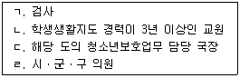
- ㄱ, ㄴ
- ㄱ, ㄷ
- ㄴ, ㄹ
- ㄱ, ㄴ, ㄷ
- ㄱ, ㄴ, ㄷ, ㄹ
(정답률: 알수없음)
47. 소년법상 보호처분에 관한 설명으로 옳지 않은 것은?
- 수강명령은 12세 이상의 소년에게만 할 수 있다.
- 사회봉사명령은 14세 이상의 소년에게만 할 수 있다.
- 수강명령은 100시간, 사회봉사명령은 200시간을 초과할 수 없다.
- 소년의 보호처분은 그 소년의 장래 신상에 어떠한 영향도 미치지 않는다.
- 보호처분이 계속 중일 때 징역, 금고, 구류를 선고받은 소년에 대하여는 그 형의 집행을 유예한다.
(정답률: 알수없음)
48. 청소년복지 지원법상 국가 및 지방자치단체가 지원해야 할 학업중단청소년으로 옳은 것은?
- 초등학교에 입학한 후 2개월 이상 결석한 청소년
- 중학교에 입학한 후 2개월 이상 결석한 청소년
- 중학교에서 취학의무를 유예한 청소년
- 고등학교에서 20일간 출석정지를 받은 청소년
- 고등학교에 입학한 후 1개월 이상 무단결석한 청소년
(정답률: 알수없음)
49. 청소년복지 지원법상 한국청소년상담복지개발원의 기능에 관한 설명으로 옳지 않은 것은?
- 청소년의 자립능력 향상을 위한 자활지원
- 청소년 상담ㆍ복지 인력의 양성
- 청소년 상담자료의 제작ㆍ보급
- 청소년 상담기법의 개발
- 청소년 가족에 대한 상담ㆍ교육
(정답률: 알수없음)
50. 아동ㆍ청소년의 성보호에 관한 법률상 법 위반행위를 한 행위자를 벌하는 것 외에 행위자가 소속된 법인에게도 벌금형을 과하는 양벌규정에 해당되는 것을 모두 고른 것은?
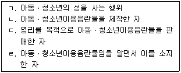
- ㄹ
- ㄱ, ㄷ
- ㄴ, ㄹ
- ㄱ, ㄴ, ㄷ
- ㄱ, ㄴ, ㄷ, ㄹ
(정답률: 알수없음)
51. 청소년복지 지원법령상 시ㆍ군ㆍ구 청소년상담복지센터에서 청소년대상 실무업무 수행직원의 자격기준에 해당되지 않는 것은?
- 청소년상담사 3급으로서 청소년상담복지 관련 실무경력이 1년 이상인 자
- 청소년지도사 2급으로서 청소년상담복지 관련 실무경력이 1년 이상인 자
- 사회복지사 2급으로서 청소년상담복지 관련 실무경력이 1년 이상인 자
- 4년제 대학을 졸업하고 청소년상담복지 관련 실무 경력이 1년 이상인 자
- 상담복지 분야의 4년제 대학을 졸업하고 청소년상담복지 관련 실무 경력이 6개월 이상인 자
(정답률: 알수없음)
52. 청소년복지 지원법령상 특별지원 대상 청소년의 선정에 관한 사항으로 옳은 것은?
- 특별시장ㆍ광역시장ㆍ도지사가 선정대상자를 결정한다.
- 선정신청을 받은 경우 운영위원회의 의결을 거쳐야 한다.
- 선정을 위해 조사해야 할 사항에는 청소년의 건강상태가 포함된다.
- 필요한 경우 15일의 범위에서 그 기간을 연장할 수 있다.
- 신청일로부터 50일 이내에 선정 여부와 지원 내용 등을 결정해야 한다.
(정답률: 알수없음)
53. 아동ㆍ청소년대상 성범죄로 유죄판결이 확정된 자의 신상정보 중에서 공개되지 않아야 할 것은?
- 가족관계
- 몸무게
- 주소
- 사진
- 성폭력범죄 전과사실
(정답률: 알수없음)
54. 국가ㆍ지방자치단체 외의 개인이나 법인이 관할 지역 지방자치단체장의 허가를 받아야 설치ㆍ운영할 수 있는 시설로 바르게 묶인 것은?
- 청소년야영장, 청소년특화시설
- 청소년수련원, 청소년자립지원관
- 청소년문화의 집, 청소년쉼터
- 청소년치료재활센터, 유스호스텔
- 청소년쉼터, 청소년자립지원관
(정답률: 알수없음)
55. 청소년복지 지원법령상 지역사회청소년통합지원체계(CYS-Net)의 필수연계기관에 속하는 것을 모두 고른 것은?
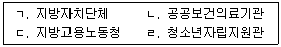
- ㄱ, ㄴ, ㄷ
- ㄱ, ㄴ, ㄹ
- ㄱ, ㄷ, ㄹ
- ㄴ, ㄷ, ㄹ
- ㄱ, ㄴ, ㄷ, ㄹ
(정답률: 알수없음)
56. 청소년의 직업체험, 문화예술, 과학정보, 환경 등 특정 목적의 청소년활동을 전문적으로 실시할 수 있는 시설과 설비를 갖춘 청소년수련시설은?
- 청소년수련원
- 청소년수련관
- 유스호스텔
- 청소년특화시설
- 청소년문화의집
(정답률: 알수없음)
57. 아동ㆍ청소년의 성보호에 관한 법령상 아동ㆍ청소년대상 성범죄의 수사절차에서 수사기관이 취해야할 보호조치로 옳지 않은 것은?
- 피해자의 권리에 대한 고지
- 가해자에 대한 조사의 최소화
- 피해자와 가해자의 대질신문 최소화
- 긴급하지 않은 수사에서 피해자의 학습권 보장
- 특별한 사정이 없으면 성범죄 수사 전문교육을 받은 인력이 피해자를 전담하여 조사
(정답률: 알수없음)
58. 법인의 대표자나 법인 또는 개인의 대리인이 그 법인 또는 개인의 업무에 관하여 법 위반행위를 하면 그 행위자를 벌하는 외에 그 법인 또는 개인도 벌하는 양벌규정에 관한 조항이 없는 것은?
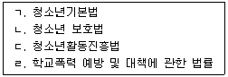
- ㄴ
- ㄹ
- ㄴ, ㄹ
- ㄱ, ㄴ, ㄷ
- ㄱ, ㄴ, ㄷ, ㄹ
(정답률: 알수없음)
59. 여성가족부에서 청소년상담사의 자격검정ㆍ연수에 관한 업무를 담당하는 부서는?
- 청소년활동진흥과
- 청소년정책과
- 청소년매체환경과
- 청소년자립지원과
- 청소년보호과
(정답률: 알수없음)
60. 청소년육성기금의 재원에 해당하지 않는 것은?
- 경륜ㆍ경정법에 의한 출연금
- 정부의 출연금
- 청소년복지 지원법에 의한 출연금
- 기금의 운용으로 생기는 수익금
- 국민체육진흥법에 의한 출연금
(정답률: 알수없음)
3과목: 상담연구방법론의 실제
61. 대학생을 대상으로 대인회피에 대한 새로운 상담방법의 효과를 검증하려 할 경우, 내적 타당도를 높이는 방법으로 옳지 않은 것은?
- 연구자가 직접 상담자로 참여한다.
- 비교집단에는 효과가 입증된 상담방법을 적용한다.
- 동질적 특성을 갖는 내담자를 선발하고 실험조건에 무선할당 한다.
- 무선적으로 선택한 상담회기를 검토하여 상담자 별로 피드백을 제공한다.
- 연구에 참여한 상담자를 대상으로 각 상담방법에 대한 교육 및 훈련을 실시한다.
(정답률: 알수없음)
62. 과학적 방법의 특성에 관한 표현으로 옳은 것을 모두 고른 것은?
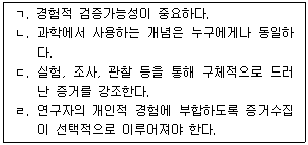
- ㄱ, ㄴ
- ㄴ, ㄷ
- ㄷ, ㄹ,
- ㄱ, ㄴ, ㄷ
- ㄴ, ㄷ, ㄹ
(정답률: 알수없음)
63. 상담자와 내담자 간 작업동맹(working alliance)에 대한 기존 메타분석 연구결과를 제시한 것이다. 옳지 않은 것은?
- 작업동맹은 일관성 있게 상담성과를 예언하는 변수이다.
- 상담자와 내담자 간의 작업동맹 평정치 상관은 낮거나 유의하지 않다.
- 작업동맹과 상담성과 간의 상관은 상담 초기와 상담종결 시점에서 큰 차이를 보인다.
- 상담 초기 작업동맹과 상담성과 간의 관계에 대한 상관연구를 통해서는 두 변인 사이의 인과관계를 확인하기 어렵다.
- 작업동맹에 대한 제 3자나 상담자의 평정보다는 내담자의 평정이 상담성과를 더 잘 예언한다.
(정답률: 알수없음)
64. 매개효과와 조절효과의 통계적 분석에 관한 설명으로 옳지 않은 것은?
- 매개효과는 경로분석 방법으로 검증할 수 있다.
- 조절효과는 분산분석 방법으로 검증할 수 있다.
- 매개와 조절효과는 모두 구조방정식 방법을 활용하여 검증할 수 있다.
- 매개와 조절효과는 모두 회귀분석 방법을 활용하여 검증할 수 있다.
- 매개와 조절은 개념적으로 상이하지만 효과 검증을 위한 통계적 검정 방법 및 절차는 동일하다.
(정답률: 알수없음)
65. 연구의 목적과 그에 관한 설명을 옳게 짝지은 것은?
- 서술-일반화된 법칙을 찾아내고자 함
- 통제-대상 각각과 이들 간의 관계를 관찰한 대로 기록하는 것임
- 이론정립-원인 사건을 조작하여 결과 사건의 발생여부를 결정하는 것임
- 예측-일반 법칙으로부터 특정한 사건이 발생하기 전에 그 사건이 일어날 것을 아는 것임
- 탐색-원인과 결과간의 관계에 대한 법칙 발견 및 그 법칙이 적용되는 조건을 구체화하는 것임
(정답률: 알수없음)
66. 내담자는 우울 증상의 심각도에 따라 BDI(Beck Depression Inventory)의 각 문항에 0점, 1점 또는 2점을 부여한다. 이때 부여한 숫자는 무슨 척도인가?
- 서열척도
- 명명척도
- 등간척도
- 비율척도
- 동간척도
(정답률: 알수없음)
67. 탐색적 연구 질문에 관한 설명으로 옳은 것은?
- 연구 목적이 분명하고 결과 해석이 분명하다는 장점이 있다.
- “변수 A와 변수 B의 관계는 어떠한가?”라는 형식을 가진다.
- 통계적 가설로 설정하고, 통계적 검정 절차를 거치게 된다.
- 가설을 세우고 예측할 만큼 많은 수의 선행연구가 있거나 선행연구의 결과가 분명할 때 활용된다.
- 다변인 설계에서만 이용되는 것으로 이변인(bivariate) 간의 관계를 알아보는 연구에서는 적용되지 않는다.
(정답률: 알수없음)
68. 통계적 분석과 그것이 사용되는 경우를 옳게 짝지은 것은?
- 공분산분석-에타제곱(η2)값을 통하여 집단간 차이를 검증함
- Z검정-모집단의 분산을 모르는 경우, 집단 간 차이를 검증함
- t검정-모집단의 평균과 분산을 아는 경우, 집단 간 차이를 검증함
- 중다회귀분석-독립변수가 복수의 종속변수에 미치는 영향을 종속변수 간 공분산을 고려하여 검증함
- χ2검정-분석할 종속변수가 범주형 변수(categorical variable)일 때 그 빈도에 따라 집단간 동질성 혹은 상관성을 검증함
(정답률: 알수없음)
69. 통계적 결론 타당도에 대한 위협요인으로 옳지 않은 것은?
- 투망식 검정
- 높은 자기상관
- 높은 다중공선성
- 관찰의 비독립성
- 작은 예언의 표준오차
(정답률: 알수없음)
70. 조작검토(manipulation check)의 목적으로 볼 수 없는 것은?
- 실험조건에 집단 간 차이가 의도한 대로 있음을 확인하기 위하여
- 의도한 실험조건 외에는 집단 간 차이가 없음을 확인하기 위하여
- 처치가 피험자에게 의도한 대로 작용하고 있는지 확인하기 위하여
- 측정도구가 의도한 대로 구인(construct)의 조작적 정의를 반영하고 있는지 확인하기 위하여
- 실험자가 사전에 계획된 대로 해야 할 것을 하고, 하지 말아야 할 것을 하지 않는지 확인하기 위하여
(정답률: 알수없음)
71. 청소년상담복지센터에서 고등학생의 흡연비율을 조사하기 위하여 지역의 모든 고등학교 중 100개 학교를 무선추출한 후, 이들 학교에서 한 학급씩을 다시 추출하였다. 이 표집방법에 관한 설명으로 옳지 않은 것은?
- 확률적 표집에 해당한다.
- 단계적 표집방법에 해당한다.
- 추리통계를 적용하지 않는다.
- 개인이 아닌 집단을 표집단위로 한다.
- 모집단의 특성에 대한 사전지식이 없을 때에도 사용할 수 있다.
(정답률: 알수없음)
72. 통계적 가설 검정에 관한 설명으로 옳은 것은?
- 유의수준이란 2종 오류를 말한다.
- 1종 오류가 증가하면 2종 오류가 감소한다.
- 표집의 수를 늘리면 통계적 검정력이 감소한다.
- 1종 오류가 감소하면 통계적 검정력은 증가한다.
- 2종 오류가 증가하면 통계적 검정력도 증가한다.
(정답률: 알수없음)
73. 통계적 추론에서 p<.⑤의 의미에 관한 설명으로 옳은 것은?
- 2종 오류의 확률이 5% 미만이다.
- 올바른 결론을 내릴 확률이 5% 미만이다.
- 영가설을 부정하지 못할 오류의 확률이 5% 미만이다.
- 모수치와 통계치가 정확하게 일치할 확률이 95% 이상이다.
- 5% 미만의 오류 가능성을 가지고 유의한 차이가 있다고 판단한다.
(정답률: 알수없음)
74. 다음은 2명의 관찰자가 100명의 아동을 대상으로 그 행위를 분류한 표이다. 이에 관한 설명으로 옳지 않은 것은?
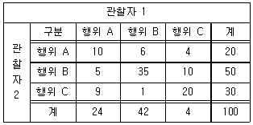
- 관찰자간 신뢰도 계수인 kappa는 0.65보다 크다.
- 관찰자가 우연히 A라고 분류할 확률은 0.1보다 작다.
- 관찰자가 우연히 B라고 분류할 확률은 0.35보다 작다.
- 관찰자가 우연히 C라고 분류할 확률은 0.2보다 작다.
- 관찰자가 우연히 아동의 행위를 동일하게 분류할 확률은 0.35보다 크다.
(정답률: 알수없음)
75. 다음 실험연구에서 타당도를 가장 크게 위협하는 요인은?
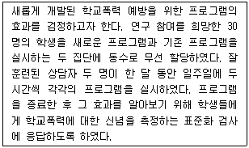
- 역사
- 성숙
- 상담자
- 측정도구
- 표본선정
(정답률: 알수없음)
76. 상담 실험 연구에서 자주 사용하는 공분산분석의 기본 가정으로 옳은 것은?
- 공변인과 종속변수는 상호 독립적이다.
- 각 종속변수마다 공변인은 하나씩 존재한다.
- 공변인에 대한 종속변수의 회귀가 처치집단 간에 동일하다.
- 공변인의 각 수준별 종속변수의 잔차는 0이다.
- 실험조건에 무선적으로 배치되지 않았을 때 적용하는 분석방법이다.
(정답률: 알수없음)
77. 통제집단 참여자들이 통제집단에 속해 있음을 알아차리고 더 열심히 노력하는 경우를 지칭하는 용어는?
- 후광(halo) 효과
- 위약(placebo) 효과
- 호손(Hawthorne) 효과
- 존 헨리(John Henry) 효과
- 실험자(experimenter) 효과
(정답률: 알수없음)
78. 우울증 치료 성과를 확인하기 위하여, 인지행동치료 처치집단(15명), 약물치료 처치집단(15명), 통제집단(15명)을 구성하여 상담연구를 진행하였다. 아래 제시한 일원분산분석 표에서 (a)+(b)+(c)+(d)+(e)의 값은?
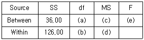
- 67
- 68
- 69
- 70
- 71
(정답률: 알수없음)
79. 동년배집단 연구에 관한 설명으로 옳은 것을 모두 고른 것은?
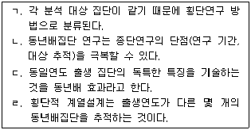
- ㄱ, ㄴ
- ㄴ, ㄷ
- ㄱ, ㄴ, ㄹ
- ㄴ, ㄷ, ㄹ
- ㄱ, ㄴ, ㄷ, ㄹ
(정답률: 알수없음)
80. 상담연구 부정행위에 관한 설명으로 옳은 것을 모두 고른 것은?
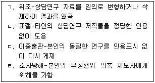
- ㄱ, ㄴ
- ㄴ, ㄷ
- ㄱ, ㄴ, ㄷ
- ㄴ, ㄷ, ㄹ
- ㄱ, ㄴ, ㄷ, ㄹ
(정답률: 알수없음)
81. 이완훈련이 심리적 적응에 미치는 효과를 검증한 100편의 논문을 메타분석한 결과, 효과 크기의 평균이 d=1.1(표준편차 0.3)로 나타났다. 이에 관한 해석으로 옳은 것을 모두 고른 것은?
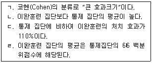
- ㄱ
- ㄴ
- ㄹ
- ㄱ, ㄷ
- ㄱ, ㄹ
(정답률: 알수없음)
82. 상담 실험 연구에서 피험자내 설계(within-subjects design)에 관한 내용으로 옳은 것은?
- 처치의 이월효과가 통제된 설계방법
- 독립변인의 모든 수준에 피험자를 할당
- 남학생집단과 여학생집단에 동일한 학업상담 프로그램을 실시
- 집단 간 변산을 줄이기 위하여 피험자 특성을 고려한 짝짓기(matching)를 실시
- 독립변인의 각 수준에서의 차이가 단지 우연에 의한 것인지 일관성있게 측정할 수 없음
(정답률: 알수없음)
83. 분산분석 후에 개별 평균들에 대한 추가분석이 필요하면, 사후비교(post-hoc comparison)를 실시하게 된다. 이에 관한 설명으로 옳은 것을 모두 고른 것은?
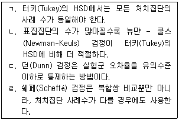
- ㄱ, ㄴ
- ㄱ, ㄹ
- ㄴ, ㄷ
- ㄱ, ㄴ, ㄹ
- ㄱ, ㄴ, ㄷ, ㄹ
(정답률: 알수없음)
84. 상관연구(correlational research)에 관한 설명으로 옳지 않은 것은?
- 상관계수의 제곱은 결정계수이다.
- 상관분석을 사용하여 변수 간의 관계를 분석한다.
- 상관계수는 0에서 +1.00까지의 값을 가진다.
- 두 변수뿐만 아니라 세 변수 이상의 관계를 연구할 수 있다.
- 대표적인 연구방법으로는 구조방정식 모형이나 요인분석 등이 있다.
(정답률: 알수없음)
85. 질적 연구의 삼각측정(triangulation)에 관한 설명으로 옳은 것을 모두 고른 것은?
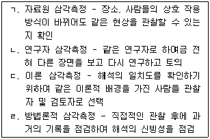
- ㄱ, ㄴ
- ㄱ, ㄹ
- ㄴ, ㄷ
- ㄱ, ㄷ, ㄹ
- ㄱ, ㄴ, ㄷ, ㄹ
(정답률: 알수없음)
86. 상담 성과를 검증하기 위한 단일사례 실험설계 중에서 교대중재설계(alternating treatments design)의 장점으로 옳은 것을 모두 고른 것은?
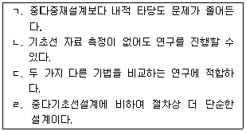
- ㄱ, ㄴ
- ㄱ, ㄷ
- ㄱ, ㄴ, ㄷ
- ㄴ, ㄷ, ㄹ
- ㄱ, ㄴ, ㄷ, ㄹ
(정답률: 알수없음)
87. 상담연구 윤리 중에서 연구참여자 권리를 보호하기 위하여 참여자 속이기 기법(위장 연구)은 매우 신중하게 수행되어야 한다. 이에 관한 설명으로 옳은 것을 모두 고른 것은?
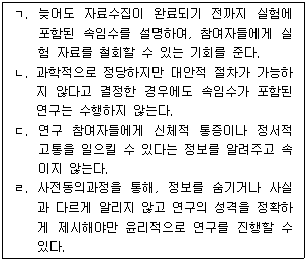
- ㄱ, ㄴ
- ㄱ, ㄷ
- ㄴ, ㄹ
- ㄱ, ㄷ, ㄹ
- ㄴ, ㄷ, ㄹ
(정답률: 알수없음)
88. 다음에 제시한 질적 연구 접근으로 옳은 것은?
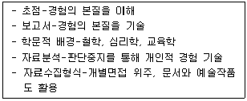
- 현상학
- 내러티브 연구
- 근거이론
- 문화기술지
- 사례연구
(정답률: 알수없음)
89. 학생들의 성별과 그들이 선호하는 상담자들의 성별 간의 관계를 추정하는데 알맞은 상관계수는?
- 상관비
- 피어슨상관계수
- 사분상관계수
- 파이계수
- 점이연상관계수
(정답률: 알수없음)
90. 자극포화법, 체계적 둔감법, 행동기술훈련이 내담자의 불안 감소에 미치는 영향을 연구하기 위하여, 모든 피험자들에게 이 세 가지 행동치료를 실시하였다. 이 연구에서 행동치료의 세 가지 조건과 제시순서의 혼입(confounding)을 통제하기 위한 방법은?
- 무선화(randomization)
- 상쇄균형화(counterbalancing)
- 요인 배치(factor allocation)
- 정렬화(line-up)
- 완곡화(smoothing)
(정답률: 알수없음)
이유는 수련상담자가 다양한 내담자를 만나면서 다양한 상황과 문제를 경험하고 이를 해결하는 방법을 배울 수 있기 때문이다. 또한, 다양한 내담자를 만나면서 자신의 전문성 수준을 높일 수 있고, 내담자와의 상호작용에서 발생하는 다양한 문제들을 경험하고 이를 해결하는 방법을 배울 수 있다. 따라서, 수련상담자가 가능하면 다양하고 많은 내담자를 만나도록 하는 것은 수련상담자의 전문성 수준을 높이는 데에 도움이 된다.